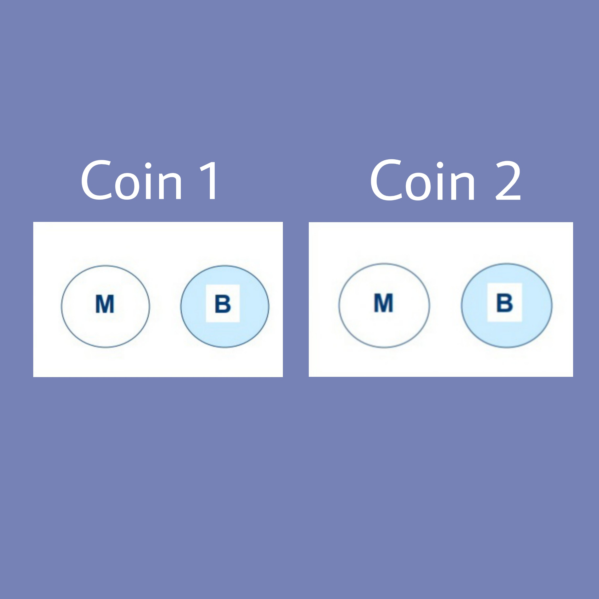
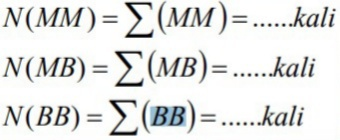
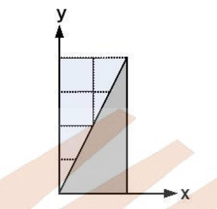
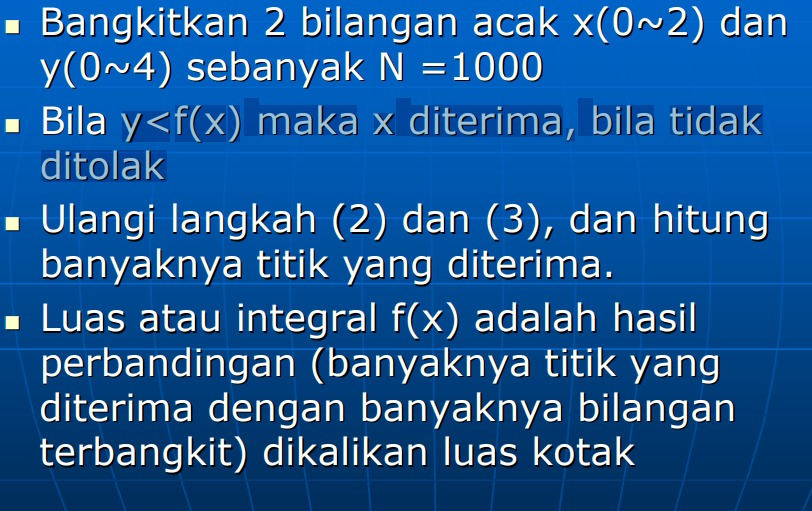
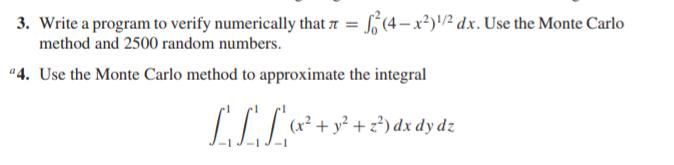
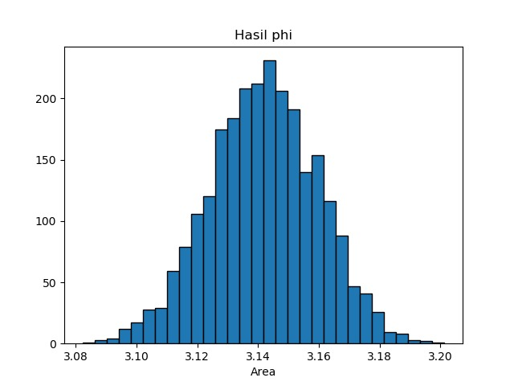

Metode dan Simulasi Monte Carlo¶
Metode Monte Carlo¶
Metode Monte Carlo adalah algoritme komputasi untuk mensimulasikan berbagai perilaku sistem fisika dan matematika. Penggunaan klasik metode ini adalah untuk mengevaluasi integral definit, terutama integral multidimensi dengan syarat dan batasan yang rumit.
algoritma Monte Carlo adalah metode numerik yang digunakan untuk mnemukan solusi problem sistematis yang terdapat dari banyak variabel serta susah dipecahkan. Algoritma ini memerlukan banyak pengulangan dan perhitungan yang kompleks.
Melihat dari cara kerjanya metode Monte Carlo merupakan metode yang memberikan segala kemungkinan nilai dari suatu variabel. Metode Monte Carlo merupakan metode yang memanfaatkan strong law of large number dalam melakukan perhitungan, artinya semakin banyak variabel acak yang digunakan akan semakin baik pula pendekatan nilai eksaknya
Simulasi Metode Monte Carlo¶
Teknik simulasi Monte Carlo terbagi atas 5 langkah sederhana, yaitu:
- Menetapkan sesuatu distribusi probabilitas bagi variabel yang penting.
Gagasan dasar simulasi Monte Carlo adalah membangkitkan nilai untuk variabel pada model yang sedang diuji. Pada sistem dunia nyata, sebagian besar variabel memiliki probabilitas alami, misalnya permintaan persediaan, waktu yang diperlukan untuk menyelesaikan aktivitas proyek. Cara menetapkan distribusi probabilitas bagi variabel tertentu adalah menguji hasil historis, yaitu dengan membagi frekuensi pengamatan untuk setiap output variabel yang mungkin dengan jumlah pengamatan total.
- Membuat distribusi probabilitas kumulatif bagi setiap variabel.
Mengubah distribusi probabilitas biasa menjadi sebuah distribusi probabilitas kumulatif (cumulative probability distribution)
- Menetapkan sebuah interval angka acak bagi setiap variabel.
Setelah distribusi probabilitas kumulatif bagi setiap variabel yang digunakan dalam simulasi ditetapkan, maka diberikan serangkaian angka yang mewakili setiap nilai atau output yang memungkinkan.
- Membangkitkan angka acak
Angka acak dapat dihasilkan dengan dua cara. Jika persoalan yang dihadapi besar dan proses yang sedang diteliti melibatkan banyak percobaan simulasi, maka digunakan program komputer untuk membangkitkan angka acak. Jika simulasi dilakukan dengan perhitungan tangan, angka acak dapat diambil dari sebuah tabel angka acak.
- Menyimulasikan serangkaian percobaan.
Hasil dari eksperimen dapat disimulasikan secara sederhana dengan memilih angka acak dari Tabel F.4. Percobaan dapat dimulai dari titik mana pun pada tabel, selanjutnya perhatikan dalam interval mana setiap angka berada.
Algoritma dan contoh metode monte carlo¶
- Probabilitas pelemparan coin Ganda

Dari teori peluang akan muncul:
MM Î ¼ MB atau BM Î ½ BB Î ¼
Dengan metode Monte Carlo dapatkan tingkat ketelitian sampai 0.01 untuk menyelesaikan kasus tersebut….
Untuk mendapatkan ketelitian sampai 0,01 maka harus dilakukan pelemparan sebanyak 1000 (N_total) kali. Dari hasil pelemparan catat keluarnya angka-angka:

P(MM) = N(MM)/N_total
P(MB) = N(MB)/N_total
P(BB) = N(BB)/N_total
Algoritma¶
-
Bangkitkan nilai 0/1 sebanyak 1000 kali (N=1000) dengan cara: n1 =(int)rand()%2 dan n2 =(int)rand()%2
-
Klasifikasi Jika n1=0 dan n2=0, maka MM=MM+1 Jika n1=0 dan n2=1 atau n1=1 dan n2=0 maka MB=MB+1 Jika n1=1 dan n2=1, maka BB=BB+1
-
Hitung probabilitas MM dengan cara N(MM)/N dan probabilitas untuk nilai MB serta BB
2.Menghitung Nilai Integral dengan monte carlo

Luas area dicari = yang berwarna atau daerah dibawah garis fungsi f(x) = 2x
Dengan dasar pemikiran tersebut diperoleh suatu perbandingan:

BIla kita melakukan pelemparan coin sebanyak N kali, dan coin jatuh di bawah garis f(x) =2x sebanyak M kali. Maka:

Algoritma¶

Tugas Programing¶
Latihan soal 13.2¶

Jawab¶
3.
implemenasi metode carlo dalam python¶
from scipy import random
import numpy as np
import matplotlib.pyplot as plt
a = 0
b = 2
N=2500
def func(x):
return (4-x**2)**0.5
area = []
for i in range(N):
xrand = np.zeros(N)
for i in range(len(xrand)):
xrand[i] = random.uniform(a,b)
integral = 0.0
for i in range(N):
integral+=func(xrand[i])
jawab = (b-a)/float(N)*integral
area.append(jawab)
plt.title("Hasil phi")
plt.hist(area,bins = 30, ec = 'black')
plt.xlabel("Area")
plt.show()
Hasil Running¶

from scipy import random
import numpy as np
a = -1
b = 1
N=100
xrand=np.zeros(N)
yrand=np.zeros(N)
zrand=np.zeros(N)
integral=0.0
for i in range(4):
for i in range(len(xrand)):
xrand[i]=random.uniform(a,b)
for i in range(len(yrand)):
yrand[i]=random.uniform(a,b)
for i in range(len(zrand)):
zrand[i]=random.uniform(a,b)
def func(x,y,z):
return (x**2)+(y**2)+(z**2)
for i in range(N):
integral+=func(xrand[i],yrand[i],zrand[i])
jawab=(b-a)/float(N)*integral
print("jawab: ",jawab)
Hasil Running¶
jawab: 7.941487167529855